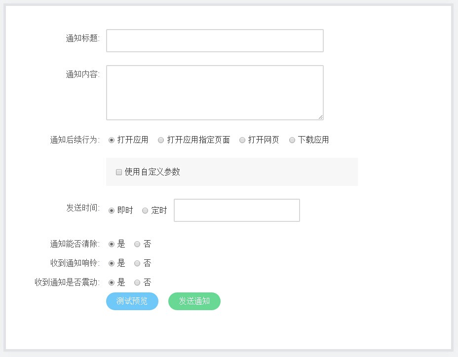
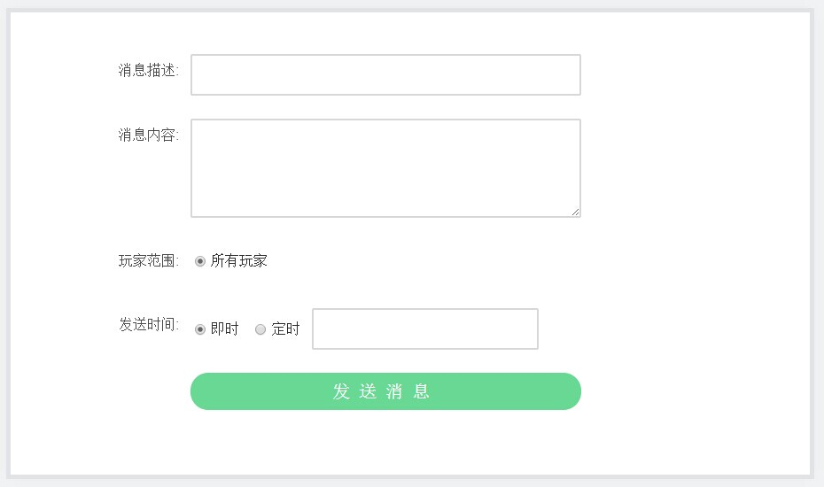
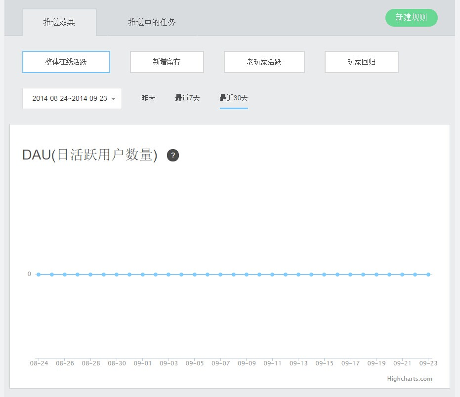
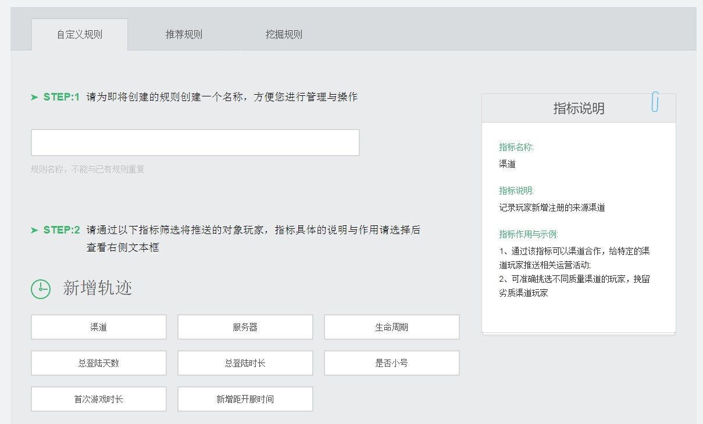
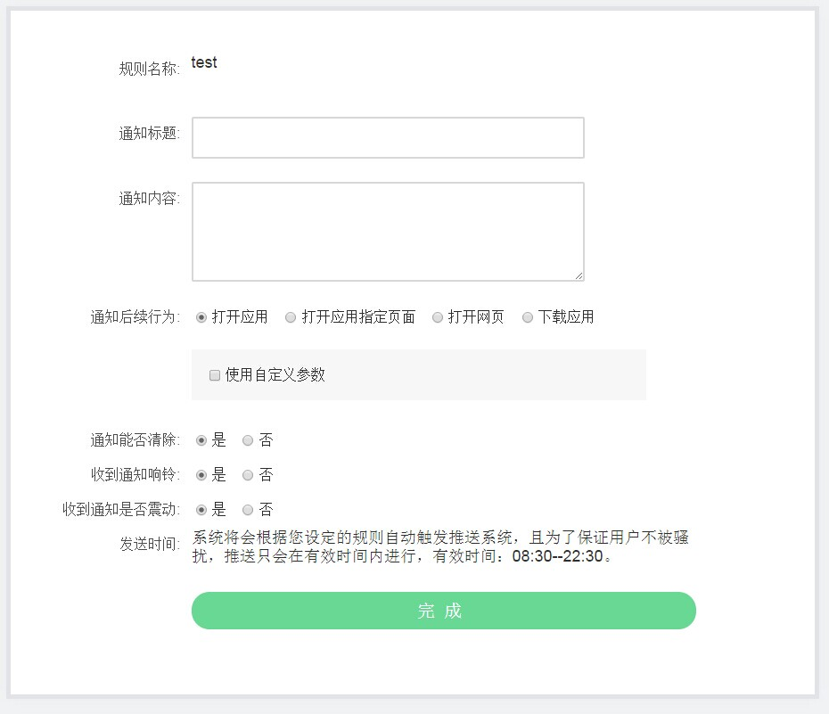

SmartPush SDK 说明文档
版本：V1.0.8
目录
-
1.1 功能
1.2 特点
1.3 SDK 包内容
1.4 Android SDK版本
-
2.1 依赖建立
2.3 添加推送代码
2.4 测试确认
-
3.1 添加采集代码
3.2 查看采集统计信息
3.3 自定义规则推送
-
5.1 IMsgReceiver
1、产品说明
1.1 功能
- 开发者能够主动、及时地向玩家发送通知或消息。
- 接收通知与自定义消息，向 App 传递相关信息。
1.2 特点
- 通过用户数据分析挖掘，为开发者定义用户群体。根据实际运营目的，做真正意义上的精确化推送；
- 通过图表清晰对比每一次的推送的效果，每一个节点游戏数据的变化尽在掌控之中。
- 推送（数据指标）、游戏内IM、玩家P2P社交等，紧紧围绕游戏而设计，增强游戏黏性，为游戏而生。
- SDK快速接入，仅需0.5-1天的开发周期。不断完善的文档中心随手查阅，还有客服跟踪与技术对接。
- 新游智能推送将互联网免费精神贯彻到底，所有开放功能均免费使用，实实在在为开发者节约成本。
1.3 SDK 包内容
示例程序工程：SmartPushExample
- SmartPushExample/src下: 示例代码
工程依赖包：smart-push-v1.x.x.jar
- 示例程序安装包：SmartPushExample.apk
- 说明文档：SmartPush SDK说明文档.pdf
1.4 Android SDK版本
- 目前SDK只支持Android 2.2或以上版本的手机系统。
2、快速集成SDK
2.1 依赖建立
拷贝 smart-push-v1.x.x.jar 包到主工程的libs下；
Eclipse 下导入依赖包
注意：使用 Eclipse ADT 17 以上版本的开发者，其可自动引用jar包。 使用 Eclipse ADT 17 以下版本开发者使用老方式添加工程引用：右键工程根目录 > Properties > Java Build Path > Libraries，然后点击Add External JARs... 选择指向jar包的路径(主项目的libs目录下)，点击OK，流程如下：


IntelliJ IDEA 下导入依赖包
工程libs目录 > 右键 smart-push-v1.x.x.jar > Add as Library > 选择Project Library > 加为项目依赖：


2.2 AndroidManifest.xml配置
manifest 标签下添加：
<!-- 必需： 权限配置 --> <uses-permission android:name="android.permission.INTERNET" /> <uses-permission android:name="android.permission.BATTERY_STATS" /> <uses-permission android:name="android.permission.ACCESS_WIFI_STATE" /> <uses-permission android:name="android.permission.ACCESS_NETWORK_STATE" /> <uses-permission android:name="android.permission.CHANGE_NETWORK_STATE" /> <uses-permission android:name="android.permission.CHANGE_WIFI_STATE" /> <uses-permission android:name="android.permission.VIBRATE" /> <uses-permission android:name="android.permission.WRITE_EXTERNAL_STORAGE" /> <uses-permission android:name="android.permission.BROADCAST_STICKY" /> <uses-permission android:name="android.permission.READ_PHONE_STATE" /> <uses-permission android:name="android.permission.SYSTEM_ALERT_WINDOW" /> <uses-permission android:name="android.permission.RECEIVE_BOOT_COMPLETED" /> <uses-permission android:name="android.permission.WAKE_LOCK" />
application 标签下添加：
<!-- 必需： 应用ID --> <meta-data android:name="NGDS_APPID" android:value="xxxx" /> <!-- 必需： 应用KEY --> <meta-data android:name="NGDS_APPKEY" android:value="xxxxxxxxxxxxxxx" /> <!-- 可选： 渠道号，默认14 --> <meta-data android:name="NGDS_CHANNEL" android:value="14" /> <!-- 必需： 推送页面配置 --> <activity android:name="com.gameservice.sdk.push.ui.SmartPushActivity" /> <!-- 必需： push 服务配置 --> <service android:name="com.gameservice.sdk.push.api.SmartPushService" android:process=":ngds" /> <!-- 必需： push 消息接收配置 --> <receiver android:name="com.gameservice.sdk.push.api.SmartPushReceiver" android:enabled="true" android:exported="false" android:priority="90000" android:process=":ngds"> <intent-filter> <action android:name="android.intent.action.PACKAGE_ADDED" /> <action android:name="android.intent.action.PACKAGE_CHANGED" /> <action android:name="android.intent.action.PACKAGE_DATA_CLEARED" /> <action android:name="android.intent.action.PACKAGE_INSTALL" /> <action android:name="android.intent.action.PACKAGE_REMOVED" /> <action android:name="android.intent.action.PACKAGE_REPLACED" /> <action android:name="android.intent.action.PACKAGE_RESTARTED" /> <action android:name="android.intent.action.USER_PRESENT" /> <action android:name="android.net.conn.CONNECTIVITY_CHANGE" /> <action android:name="android.intent.action.BOOT_COMPLETED" /> <action android:name="cn.ngds.android.intent.alarm" /> </intent-filter> </receiver>
- meta-data 标签配置说明：
- NGDS_APPID（应用ID）的value值配置成您在GameService 开发网站里所添加游戏对应的AppId。
- NGDS_APPKEY（应用KEY）的value值配置成您在GameService 开发网站里所添加游戏对应的AppKey。
- NGDS_CHANNEL（渠道号）的value值默认配置成14，有发渠道包的请填具体的渠道号。
2.3 添加推送代码
- 推送服务包括：
- 推送通知：通知以状态栏Notification的形式展现，无需开发者处理。
- 推送消息：处理消息需开发者实现 IMsgReceiver 子类。
2.3.1 添加推送服务代码
创建一个类(如MessageReceiver)实现IMsgReceiver接口，请参考IMsgReceiver类介绍。
private class MessageReceiver implements IMsgReceiver { @Override public void onMessage(String message) { // 处理透传消息 message是Json字符串 android.util.Log.i("TGX", "message:" * message); } @Override public void onDebug(String debugInfo) { // SDK发出的debug信息，可不处理 android.util.Log.i("TGX", "message:" * debugInfo); } @Override public void onDeviceToken(String deviceToken) { //SmartPushOpenUtils本地化deviceToken的帮助类，开发者可以自己实现本地化存储deviceToken SmartPushOpenUtils.saveDeviceToken(PushActivity.this, deviceToken); // 在取得DeviceToken时，玩家id(为字符串，若没有玩家id，请设置为"0")与设备绑定,“playerId”为当前玩家id(为字符串，若没有玩家id，请设置为"0") SmartPush.bindDevice(PushActivity.this, deviceToken, "playerId"); } }在Activity或者Application子类中注册实现的类(如MessageReceiver)，并开启服务，如下：
SmartPush.registerReceiver(new MessageReceiver()); SmartPush.registerService(this);
2.3.2 添加异常捕获功能
Application的子类中添加如下代码，设置全局的异常捕获处理，帮助开发者分析异常原因。
public class BaseApp extends Application { private Thread.UncaughtExceptionHandler mDefaultUncaughtExceptionHandler; @Override public void onCreate() { super.onCreate(); initErrorHandler(); } private void initErrorHandler() { mDefaultUncaughtExceptionHandler = Thread.getDefaultUncaughtExceptionHandler(); Thread.setDefaultUncaughtExceptionHandler( new NGDSCrashHandler(this, mDefaultUncaughtExceptionHandler)); } }AndroidManifest.xml 的 application 标签添加代码配置Application类
<application android:name=".BaseApp" ......
2.3.3 设置Debug模式
Application的子类中进行如下调用，以此来设置Debug模式。若设置为Debug模式，SDK会记录程序信息并在logcat中打印调试log；若设置为非Debug模式，SDK不会做这些操作(默认为debug模式)。
@Override public void onCreate() { super.onCreate(); SmartPush.setDebugMode(true); }
2.4 测试确认
- 请确认 AndroidManifest.xml 中的NGDS_APPKEY、NGDS_APPID、NGDS_CHANNEL的value值是否正常填写。
- 请确认主项目包名是否与GameService 开发网站里相应的App一致。
- smart-push-v1.x.x.jar 包是否添加为依赖。
2.4.1 测试推送通知
* 登入GameService 开发网站，在要推送应用下点击创建推送 > 网页推送 > 推送通知： 2.4.2 测试推送消息
登入GameService 开发网站，在要推送应用下点击创建推送 > 网页推送 > 推送消息：

3 采集的配置与使用
- SDK提供采集功能，开发者调用采集API可记录用户行为，并在GameService 开发网站会呈现“日活跃用户数量”等统计信息；商家可依据这些采集到的行为进行分析作出争对性推送，增加高活跃用户，提高盈利。若不使用采集API，无法使用此功能。
3.1 添加采集代码
在Activity的onResume和onPause方法中作如下调用，以此来支持采集API的使用,若不添加如下代码，采集登入登出的相关API无法正常使用
@Override protected void onPause() { SmartPush.onActivityPause(this); super.onPause(); } @Override protected void onResume() { SmartPush.onActivityPause(this); super.onResume(); }玩家连接服务器后添加以下代码，记录当前服务器id和对应名称：
// 这边serverId和serverName规则为开发者自定义，键值对形式 SmartPush.recordServer("1001", "春暖花开");应用开始时即可记录当前渠道id和渠道id对应名称：
// 这边channelId和channelName规则为开发者自定义，键值对形式 SmartPush.recordChannel("1", "新游互联");SDK提供了采集玩家各种行为的API，供开发者使用，调用方式和场景请参考采集API介绍。
3.2 查看统计信息
登入GameService 开发网站，在要查看的应用下点击：推送记录 > 精确推送 > 提高在线玩家数，即可查看统计信息:

3.3 自定义规则
登入GameService 开发网站，在要查看的应用下点击：推送记录 > 精确推送 > 提高在线玩家数 > 自定义规则 ，根据采集信息创建特定推送规则。


4、API 介绍
推送 API
注册启动push服务
- 调用方法： SmartPush.registerService (Context context)
- 使用场景： 开发者需要开启push服务时调用
- 参数说明： context 当前上下文
注销消息接收者
- 调用方法： SmartPush.unRegisterReceiver()
- 使用场景： 开发者需要关闭push服务时调用
- 参数说明： 无
注册消息接收者
- 调用方法： SmartPush.registerReceiver(IMsgReceiver receiver)
- 使用场景： 开发者需要开启push服务前，注册IMsgReceiver
- 参数说明： receiver消息处理接口类
玩家绑定设备接口
- 调用方法： SmartPush.bindDevice(Context context, String deviceToken, String playerId)
- 使用场景： 当成功取得deviceToken时，需调用此方法使玩家id(为字符串，若没有玩家id，请设置为"0")和设备绑定
- 参数说明：
- context 当前上下文
- deviceToken 设备token
- playerId 玩家id(为字符串，若没有玩家id，请设置为"0")
设置Debug模式
- 调用方法： SmartPush.setDebugMode(boolean isDebugable)
- 使用场景： 在应用开启时设定是否为debug模式
- 参数说明： isDebugable 是否设为Debug状态布尔值（true为Debug状态）
采集 API
记录玩家离开当前页面行为
- 调用方法： SmartPush.onActivityPause(Context context)
- 使用场景： 当Activity进入onPause状态时调用
- 参数说明：
- context 当前上下文
记录玩家返回当前页面行为
- 调用方法： SmartPush.onActivityResume(Context context)
- 使用场景： 当Activity进入onResume状态时调用
- 参数说明：
- context 当前上下文
玩家登录记录
- 调用方法： SmartPush.recordLogin(Context context, String playerId)
- 使用场景： 当玩家登入时调用
- 参数说明：
- context 当前上下文
- playerId 玩家id(为字符串，若没有玩家id，请设置为"0")
- context 当前上下文
玩家登出记录
- 调用方法： SmartPush.recordLogout(Context context)
- 使用场景： 当玩家登出时调用
- 参数说明： context 当前上下文
记录当前服务器id和对应名称
- 调用方法： SmartPush.recordServer(String serverId, String serverName)
- 使用场景： 当玩家连接上服务器时调用
- 参数说明：
- serverId 服务器id,开发者服务器自定义id(采用英文字母、数字、下划线的组合，如"91Store_1")
- serverName 服务器id对应名称
- serverId 服务器id,开发者服务器自定义id(采用英文字母、数字、下划线的组合，如"91Store_1")
记录当前渠道id和渠道id对应名称
- 调用方法： SmartPush.recordChannel(String channelId, String channelName)
- 使用场景： 可在应用开始时调用
- 参数说明：
- channelId 渠道id,开发者自定义渠道id(采用英文字母、数字、下划线的组合,例如"91_store")
- channelName 渠道id对应名称
- channelId 渠道id,开发者自定义渠道id(采用英文字母、数字、下划线的组合,例如"91_store")
玩家充值记录
- 调用方法： SmartPush.recordPay(Context context, String playerId, float amount, String paymentChanel, String currency, int coinAmount, String orderId, int level)
- 使用场景： 当玩家完成充值后调用
- 参数说明：
- context 当前上下文
- playerId 玩家id(为字符串，若没有玩家id，请设置为"0")
- amount 充值金额
- paymentChanel 支付渠道
- currency 金额币种
- coinAmount 充值游戏币个数
- orderId 订单号
- level 玩家等级(0-100的数字)
- context 当前上下文
记录玩家开始游戏的时间
- 调用方法： SmartPush.recordPlayerStartTime(Context context, String playerId, int playerLevel)
- 使用场景： 当玩家进入游戏时调用
- 参数说明：
- context 当前上下文
- playerId 玩家id(为字符串，若没有玩家id，请设置为"0")
- playerLevel 玩家等级(0-100的数字)
- context 当前上下文
记录玩家离开游戏的时间
- 调用方法： SmartPush.recordPlayerEndTime(Context context, String playerId, int playerLevel)
- 使用场景： 当玩家退出游戏时调用
- 参数说明：
- context 当前上下文
- playerId 玩家id(为字符串，若没有玩家id，请设置为"0")
- playerLevel 玩家等级(0-100的数字)
- context 当前上下文
记录玩家进入关卡的时间
- 调用方法： SmartPush.recordMissionStartTime(Context context, String playerId, String missionId, String missionName)
- 使用场景： 当玩家进入特定关卡时调用
- 参数说明：
- context 当前上下文
- playerId 玩家id(为字符串，若没有玩家id，请设置为"0")
- missionId 关卡id(使用100001~199999之间字符串表示)
- missionName 关卡id对应名称
- context 当前上下文
记录玩家离开关卡的时间
- 调用方法： SmartPush.recordMissionEndTime(Context context, String playerId, String missionId, String missionName)
- 使用场景： 当玩家离开特定关卡时调用
- 参数说明：
- context 当前上下文
- playerId 玩家id(为字符串，若没有玩家id，请设置为"0")
- missionId 关卡id(使用100001~199999之间字符串表示)
- missionName 关卡id对应名称
- context 当前上下文
玩家虚拟消费记录
- 调用方法： SmartPush.recordConsumption(Context context, String playerId, String itemId, String itemName, int itemAmount, int coinAmount)
- 使用场景： 当玩家在App中有虚拟消费行为时调用
- 参数说明：
- context 当前上下文
- playerId 玩家id(为字符串，若没有玩家id，请设置为"0")
- itemId 消费商品id
- itemName 消费商品id对应名称
- itemAmount 消费商品数量
- coinAmount 消费虚拟币数量
玩家剩余金币记录
- 调用方法： SmartPush.recordCoinAmount(Context context, String playerId, int coinAmount)
- 使用场景： 当玩家在App中虚拟消费后调用
- 参数说明：
- context 当前上下文
- playerId 玩家id(为字符串，若没有玩家id，请设置为"0")
- coinAmount 消费虚拟币数量
5、相关类介绍
5.1 IMsgReceiver（消息接收接口）
| 分类 | 功能 | 方法 |
|---|---|---|
| 透传消息接口 | 透传消息 | onMessage |
| 调试消息接口 | debug 消息 | onDebug |
| deviceToken信息接口 | deviceToken | onDeviceToken |
接收到的push消息
- 方法： public void onMessage(String message)
- 功能： 提供开发者message消息用于处理透传消息
- 参数： message 为Json字符串
接收到的debug消息
- 方法： public void onDebug(String debugInfo)
- 功能： 提供开发者debug信息用于调试
- 参数： debugInfo 为debug内容信息
接收分配到的deviceToken信息
- 方法： public void onDeviceToken(String deviceToken)
- 功能： 提供开发者deviceToken用于deviceToken的本地化和玩家id的绑定
- 参数： deviceToken 设备token
5.2 SmartPushOpenUtils 工具类
本地化DeviceToken
- 方法： public static void saveDeviceToken(Context context, String deviceToken)
- 功能： 保存DeviceToken
- 参数：
- context 当前上下文
- deviceToken 设备token
取得已经保存的deviceToken
- 方法： public static String loadDeviceToken(Context context)
- 功能： 取得保存的deviceToken
- 参数： context 当前上下文